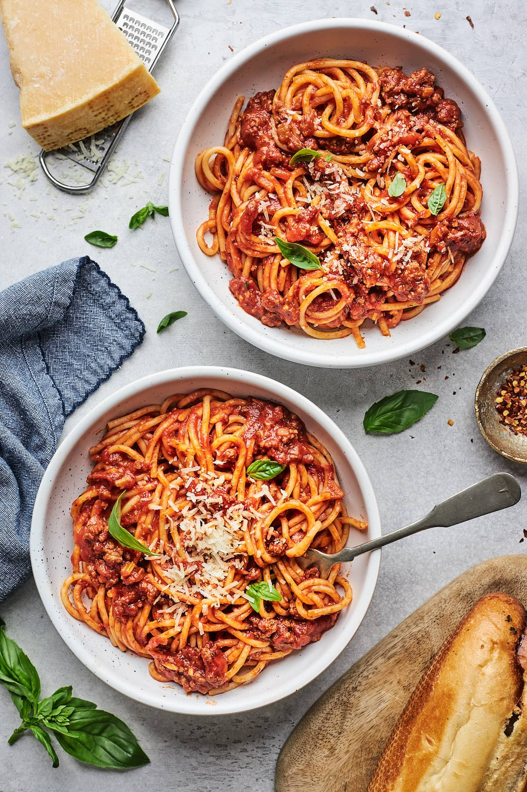

Spaghetti

Description
This Spaghetti recipe is loved by many as it uses basic household ingredients! Topping cooked spaghetti noodles with a rich and heavy homemade meatsauce takes less than 45 minutes! It can be paired with either a salad or garlic bread.
Ingredients
- Olive Oil
- Veggies
- Garlic
- Ground beef
- Beef broth
- Tomatoes
- Italian seasoning
- Crushed red pepper
- Bay leaves
- Spaghetti
- Parmesan cheese & Fresh basil
Steps
- Heat olive oil over med-high heat. Add in veggies and cook until soft. Stir in garlic and cook for about one minute.
- Add ground beef and cook until browned. While it is cooking break beef into smaller pieces. Drain grease one done.
- Pour in beef broth and bring to a boil. Let simmer for two minutes.
- Add in seasoning and tomatoes. Stir well to combine and add bay leaves.
- Reduce heat and let simmer for about 20 minutes.
- While sauce is on simmer, cook spaghetti noodles according to instructions on package.
- Remove bay leaves.
- Plate spaghetti noodles and pour the meatsauce over the noodles.
- Garnish with parmesan cheese and basil.